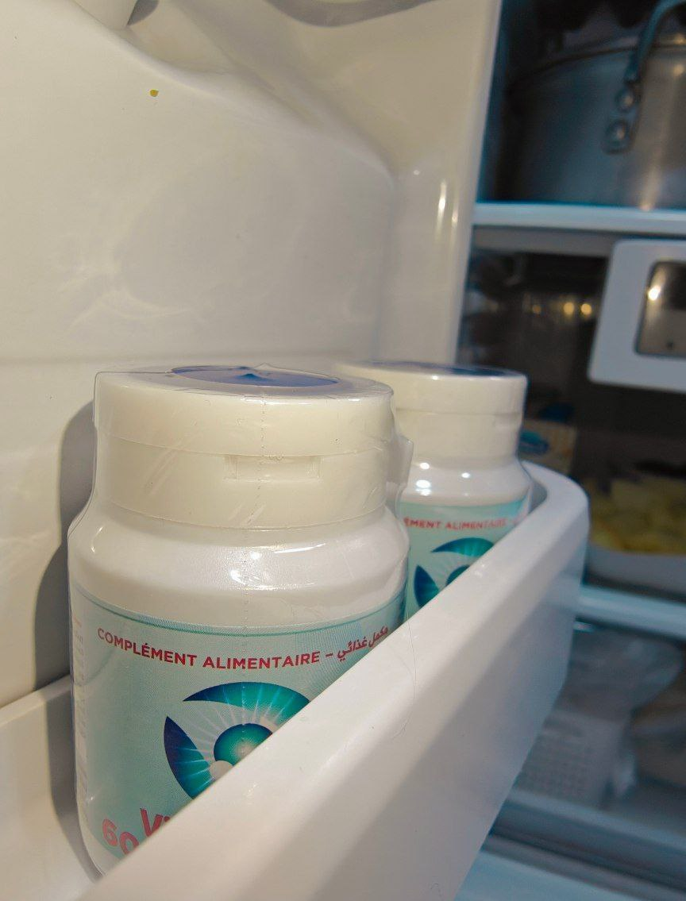
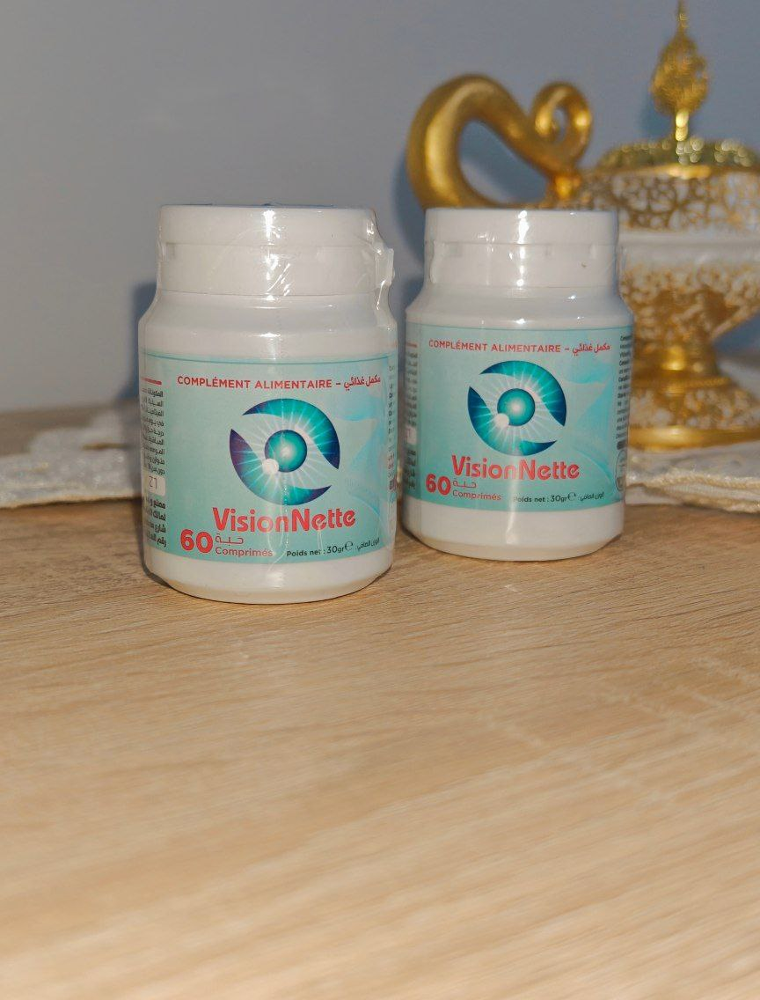
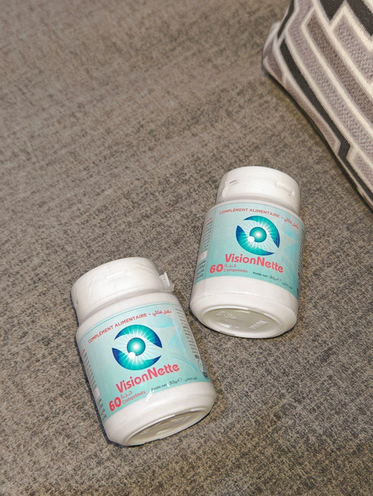
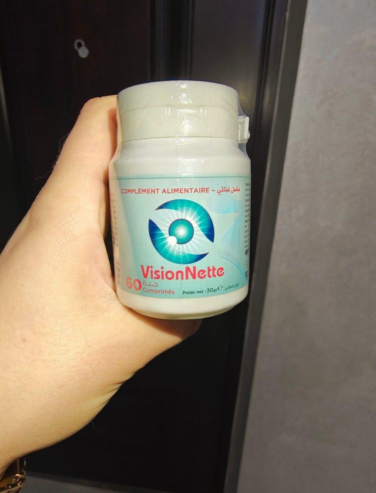

بعد اليوم لن يكون هناك المزيد من مشاكل العيون .
تعد مشاكل العيون من القضايا الصحية الشائعة التي تؤثر على الكثير من الأشخاص في جميع أنحاء العالم. قد تكون هذه المشاكل نتيجة لأسباب مختلفة مثل العوامل الوراثية والعوامل البيئية و مشاكل العيون. في هذا المقال، سنتناول اليوم قصة أحد الأشخاص اللذين عانوا من مشاكل العيون و كيف تخلص منها بكل سهولة مع مكمل غذائي جديد طبيعي 100 % .

اليوم ننشر لكم قصة محمد و معاناته مع مشاكل العيون و كيف تخلص منها تماماً :
- من هو محمد ؟
- كيف وصل محمد إلى اليأس :
- ماذا بعد العودة من تركيا ؟
- كان الشك بداخل محمد :
- نتيجة إستخدام محمد للمكمل الغذائي vision Nette :
محمد هو رجل بسيط يعمل كلحام في إحدى القرى الصغيرة في قلب الصحراء. كان محمد يستيقظ كل صباحأ قبل الفجر ليبدأ يومه الشاق تحت الشمس الحارقة. كانت عائلته تعتمد عليه كليًا، وكان هو السند والأمل الوحيد لهم. لكن،بعد سنوات من العمل الشاق والتعرض المستمر للضوء الساطع أثناء عمله ، بدأ بصره يتدهور تدريجياً. أصبح يرى العالم من حوله ضبابياً حتى وصل إلى مرحلة قريبة من العمى الكامل.
وفي حالة من اليأس، قرر محمد أن يبحث عن طريقة تنقذه و تخلصه من هذا الكابوس. باع سيارته، وحصل على قرض ليتوجه إلى الأطباء في تركيا، حيث أمل أن يجد الحل المناسب. أجرى هناك عمليات جراحية عديدة، ولكنها لم تحقق أي نتائج. اتضح لاحقًا أن المختصين في العيادات التركية قد استغلوا حالته لكسب المال، وأوهموه بوعود زائفة. عاد محمد إلى منزله محطم الأمل، فاقداً إيمانه بمستقبل أفضل.
كان هذا شكل عيون محمد


بعد أشهر من العودة، أصبح محمد معتاداً على العيش في شبه الظلام بسبب ان عيونه أصبحت أسوأ بعد إجرائه العمليات في تركيا ،أصبح يعتمد على مساعدة الأصدقاء والعائلة في معظم أمور حياته. وفي يومٍ من الأيام، زاره صديقه القديم أيمن، الذي كان دائمًا مؤمنًا بالتقنيات والابتكارات الجديدة. أخبر أيمن محمد عن اختراع جديد - مكمل غذائي يسمى vision Nette، الذي تم تصميمه خصيصًا لأشخاص يعانون من مشاكل في الرؤية مثله.

هذا شكل عيون محمد عن قرب بعد عودته من تركيا
كان محمد متشككاً في البداية، فقد جرب العديد من المنتجات من قبل ولم تساعده. ولكنه، لعدم رغبته في الإساءة إلى صديقه، قرر أن يمنح المكمل الغذائي فرصة.
مرت الأسابيع، وبدأ محمد يلاحظ تغيرات طفيفة. شعر أن رؤيته تتحسن قليلاً وأن عينيه أقل تعباً بعد أيام طويلة. لم يكن هذا التحسن فورياً، لكن مع مرور الوقت، بدأ يشعر بفرق كبير. عاد الأمل إلى قلبه، وبدأت حياته تتغير تدريجياً. أصبح أقل اعتمادًا على الآخرين وبدأ يرى مستقبلاً أفضل.
وهكذا، تحولت قصة محمد من ظلام اليأس إلى نور الأمل، ليصبح رمزًا لكل من يعاني من مشاكل في الرؤية. لقد تعلم أن حتى أصعب التجارب يمكن التغلب عليها بالإيمان والعمل الجاد.
قام أحد المراسلين بالذهاب و التحدث مع محمد ليعرف عن تجربته عن المكمل الغذائي vision Nette و سوف ننشر لكم تفاصيل المقابلة معه هنا :
المذيع: أهلاً و سهلاً بك محمد, نشكرك على قبولك اللقاء معنا و نتمنى ان تكون بخير الأن .
محمد: أهلاً وسهلاً، شكراً لكم على استضافتي. أنا بخير تماماً و شكراً لكم على إستضافتي معكم .
المذيع: محمد، قصتك ألهمت الكثيرين. هل يمكنك أن تخبرنا كيف بدأت معاناتك مع ضعف البصر؟
محمد: بالطبع. لقد كنت أعمل كحام طوال حياتي، وكان عملي يتطلب التعرض المستمر للضوء الساطع. مع مرور السنوات، بدأت أشعر بأن بصري يتدهور تدريجياً. كان الأمر صعبًا جدًا لأنني كنت أعيل عائلتي وكانوا يعتمدون عليّ بشكل كامل.
المذيع: يبدو أنها كانت تجربة مؤلمة جداً. ماذا فعلت عندما بدأت تشعر أن بصرك يتدهور بشكل ملحوظ؟
محمد: عندما شعرت أنني على وشك العمى الكامل، قررت البحث عن حل . بعت سيارتي وحصلت على قرض للسفر إلى تركيا، حيث سمعت عن أطباء قد يكونون قادرين على مساعدتي. لكن للأسف، لم تحقق العمليات أي نتائج. في الواقع، تبين أن الأطباء في تلك العيادة استغلوني فقط لأخذ المال.
المذيع: يا للأسف، تلك كانت ضربة قاسية. كيف تأقلمت مع الوضع بعد عودتك إلى الوطن؟
محمد: بعد العودة، كنت محطم الأمل. اعتدت على العيش في شبه الظلام، معتمداً على مساعدة الأصدقاء والعائلة في كل شيء تقريباً. كان الأمر محبطاً للغاية، وكنت أشعر بالعجز التام.
المذيع: لكن الأمور تغيرت لاحقاً، أليس كذلك؟ كيف تعرفت على المكمل الغذائي vision Nette ؟
محمد: نعم، الأمور تغيرت بفضل صديقي القديم أيمن. كان دائماً مؤمناً بالتقنيات الجديدة وأخبرني عن مكمل غذائي جديد يسمى vision Nette . في البداية كنت متشككاً، فقد جربت العديد من المنتجات من قبل ولم تنجح. لكن، لعدم رغبتي في الإساءة لصديقي، قررت أن أجربه.
المذيع: وكيف كانت تجربتك مع vision Nette ؟
محمد: في البداية، لم ألاحظ الكثير من التغيير. لكن بعد عدة أسابيع، بدأت ألاحظ تحسناً طفيفاً في رؤيتي وأصبحت عيني أقل تعباً بعد أيام طويلة. ومع مرور الوقت، بدأ التحسن يصبح أكثر وضوحاً. شعرت بأن الأمل يعود إلى حياتي مجدداً.
المذيع: هذا رائع! هل يمكنك أن تخبرنا كيف أثر ذلك على حياتك اليومية؟
محمد: بالتأكيد. مع تحسن بصري، بدأت أستعيد استقلاليتي تدريجياً. أصبحت أقل اعتماداً على مساعدة الآخرين وبدأت أرى مستقبلاً أفضل. أصبحت أكثر نشاطاً وبدأت أشارك قصتي مع الآخرين، موصياً بـ vision Nette لكل من يعاني من مشاكل في الرؤية.
المذيع: محمد هل يمكنك ان تشرح لنا ما هي المكونات التي يتكون منها هذا المكمل الغذائي ؟
محمد: نعم بالطبع لقد قرأت الكثير عنه بعدما بدأت في إستخدامه و عرفت عنه الكثير و مكوناته هي مكونات طبيعية 100% و ليس بها أي إضافات كيميائية و ربما هذا ما أدى بي إلى هذه النتيجة الرائعة ! و سوف أقول لك الأن المكونات و أهمية كل مكون منهم :
- مستخلص اللوتين
- السيليكا الغروية
- ستيرات المغنيسيوم
مستخلص اللوتين يمكن أن يساعد في تحسين صحة العين، حيث يقوم بحماية العين من الأضرار التي يمكن أن تسببها الأشعة فوق البنفسجية والتي يمكن أن تؤدي إلى مشاكل مثل المياه البيضاء والماكولار ديجنيريشن.
السيليكا الغروية هي عنصر مهم لصحة الجسم، حيث تشكل جزءًا من العديد من الأنسجة في الجسم مثل العظام والأنسجة الضامة والغضاريف. كما أنها تعتبر مضاداً للأكسدة الطبيعي وتساعد في تقوية الجهاز المناعي والحفاظ على صحة الجلد والشعر والأظافر.
أن استهلاك الأطعمة الغنية بالمغنيسيوم يمكن أن يساعد في تحسين صحة العين، حيث يمكن الحصول على المغنيسيوم من الخضروات الورقية الخضراء والمكسرات والحبوب والبقوليات والأسماك واللحوم او عن طريق تناوله في شكل مكمل غذائي .
المذيع: هل يمكنك أن تشرح للناس كيف قمت بإستخدام المكمل الغذائي vision Nette ؟
محمد: بالطبع. إن إستخدامه سهل جداً : يجب تناول حبة واحدة يومياً مع كوب كبير من الماء مع وجبات الطعام .
المذيع: شكراً لك، محمد، على مشاركة قصتك الملهمة معنا. هل لديك رسالة تود توجيهها لمن يعاني من مشاكل في الرؤية ويشعر باليأس؟
محمد: نعم، أود أن أقول لهم ألا يفقدوا الأمل. حتى في أصعب اللحظات، هناك دائماً فرصة لتحسين الوضع. يجب أن يؤمنوا بأنفسهم ويستمروا في البحث عن الحلول. vision Nette كان بالنسبة لي رمزاً للأمل والتغيير، وربما يكون كذلك للآخرين أيضاً.
تتعرض العيون للعديد من المشاكل التي تؤثر على نظرنا وصحتها العامة. قد تكون هذه المشاكل مزعجة ومؤلمة، وتتطلب حلاً فوريًا للتخلص منها. في هذا المقال.
سوف نعرفكم اليوم على الطبيب الشهير Daniel Lorenzo Parra / طبيب عيون و خبير بمشاكل العيون

من المعروف عن الطبيب دانييل انه يفضل الطرق الطبيعية في التخلص من المشاكل الصحية و ليست الطرق الكيميائية . لذا اليوم سوف نوضح لكم طريقته في التعامل و التخلص من مشاكل العيون بطريقة طبيعية :
يقول الطبيب دانييل انه إذا تم خلط بعض المكونات الطبيعية مع بعضها فسوف تتكون وصفة طبيعية 100% للتخلص من مشاكل العيون و حتى يمكنكم عملها بالمنزل إذا توفرت المكونات
و هنا سوف نسرد لكم المكونات التي نصح بها الطبيب و فوائد كل مكون منهم
- مستخلص اللوتين
- السيليكا الغروية
- ستيرات المغنيسيوم
مستخلص اللوتين يمكن أن يساعد في تحسين صحة العين، حيث يقوم بحماية العين من الأضرار التي يمكن أن تسببها الأشعة فوق البنفسجية والتي يمكن أن تؤدي إلى مشاكل مثل المياه البيضاء والماكولار ديجنيريشن.
السيليكا الغروية هي عنصر مهم لصحة الجسم، حيث تشكل جزءًا من العديد من الأنسجة في الجسم مثل العظام والأنسجة الضامة والغضاريف. كما أنها تعتبر مضاداً للأكسدة الطبيعي وتساعد في تقوية الجهاز المناعي والحفاظ على صحة الجلد والشعر والأظافر.
أن استهلاك الأطعمة الغنية بالمغنيسيوم يمكن أن يساعد في تحسين صحة العين، حيث يمكن الحصول على المغنيسيوم من الخضروات الورقية الخضراء والمكسرات والحبوب والبقوليات والأسماك واللحوم او عن طريق تناوله في شكل مكمل غذائي .
رأي الطبيب الإسباني العالمي Daniel Lorenzo Parra في المكمل الغذائي vision Nette :

" كل ما أستطيع أن انصحكم به هو هو إستخدام المكمل الغذائي المعجزة vision Nette فهو حاز على إعجابي شخصياً و إعجاب كل مرضاي اللذين إستخدموه و كانت نتائجه معهم رائعه و أنصح دائماً به المرضى و أيضاً حتى إستخدامه للوقاية من مشاكل العيون مستقبلاً . "
اليوم جئنا لكم بهذا المنتج إلى الجزائر vision Nette و هو يتم تصنيعه الأن في الجزائر و مكوناته تم إستيرادها من دول اوروبية نظراً لندارة وجودها في الجزائر.

فوائد vision Nette :
- يساعد في القضاء على قصر النظر و طول النظر
- يساعد على التخلص من ألام العديد من المشاكل مثل : التهاب الملتحمة - الزرق (الجلوكوما): - تهيج العيون - جفاف العين
- دعم صحة العين
- تحسين حدة البصر بمضادات الأكسدة والمغذيات الوقائية مثل اللوتين
- بالإضافة إلى ذلك ، يساعد vision Nette في مكافحة إجهاد العين وإبطاء تطور التنكس البقعي المرتبط بالعمر.
- التخلص من إلتهاب العيون و ألمها المزعج
- التخلص من الصداع الدائم نتيجة مشاكل العيون
- المساعدة على التخلص من إعتام عدسة العين (الكتاركت)
كيف تتمكنوا من شراء vision Nette في الجزائر بالخطوات
- إملأ نموذج الطلب بالأسفل .
- سوف يتواصل معك مختص للرد على كل أسئلتك و تاكيد عنوان التوصيل معك
- ليس عليك دفع أي شيء مقدماً و الدفع فقط عند الإستلام
تخفيض 65% !عند شرائك المنتج في الجزائر اليوم !
نموذج الطلب الرسمي
السعر قبل التخفيض : 19000 DZD
السعر بعد التخفيض : 5990 DZD
عند شرائك دورة vision Nette
مراجعة الزبناء
Je ne vois pas bien de mon œil gauche. J'ai aussi un astigmatisme progressif. J'ai peur de devenir aveugle…
Il existe actuellement de nombreux compléments alimentaires naturels contrefaits. Dites-moi où obtenir l'original vision Nette ?
J'ai guéri du glaucome en deux semaines ! Étonnamment, mes yeux peuvent à nouveau voir parfaitement.
Acheté vision Nette à la pharmacie. Je l'utilise depuis 5 jours, ça n'aide pas, ma vision n'est pas restaurée !
Je ne peux pas décrire à quel point je suis heureux ! Merci beaucoup! Maintenant, mes yeux sont à nouveau en bonne santé !
Mon œil droit ne pouvait presque rien voir, sans l'aide de vision Nette, il n'y aurait aucune chance…
Ma vue s'est considérablement détériorée au cours de la dernière année en raison du travail à l'ordinateur... Ni les lentilles spéciales ni les pilules pour les yeux ne m'ont aidé. Je pensais que j'allais complètement perdre la vue jusqu'à ce que j'apprenne l'existence de vision Nette. Avec son aide, mon amie a retrouvé sa vision de 90%, elle a décidé de l'essayer et n'a absolument aucun regret !
Ce complément alimentaire naturel fonctionne vraiment ! J'ai également commandé sur ce site sans prépaiement. La commande est arrivée en 3-4 jours. Ne retardez, sinon il sera peut-être trop tard !
C'est bien que nous ayons des enfants aussi intelligents ! Je lui souhaite santé et bonheur !
Je ne pensais pas que vision Nette m'aiderait, j'ai donc subi une opération il y a un mois. Mais quand j'ai commencé à l'utiliser, mon ophtalmologiste a été choqué par les résultats. Presque plus de cataractes. Il m'a demandé ce que je prenais et m'a dit qu'il n'avait jamais entendu parler de ce complément alimentaire naturel, sinon il me l'aurait prescrit tout de suite et ne m'aurait pas envoyé me faire opérer !
J'ai vu ce spécialiste dans une revue médicale. Merci pour votre honnêteté!
شكراً لكم! لقد لحقت بالتخفيض .
أنا أعمل طوال اليوم على الكمبيوتر و لذلك نظري ضعف كثيراً مؤخراً و لكن بعد إستخدامي لهذا المكمل الغذائي حقاً أشعر بتحسن كبير شكراً لكم و أنصح الجميع به !
لقد طلبته لأمي لانها تعاني من إعتام عدسة العين و النتيجة كانت مذهلة ! شكراً لكم !